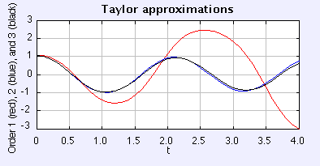

This simulation implements the Taylor algorithm and plots the approximated solution for a simple, undriven pendulum for the algorithm including first, second, and third order derivative terms of the Taylor expansion, using the same value of h=0.1.
The simulation shows the typical behavior of Taylor methods. The first order method (the red plot), also known as Euler method, provides a very poor approximation to the solution. Second order terms (the blue plot) do a better job, but still not perfect. The solution which includes third order terms (the black one) is almost indistinguishable from the true solution.
